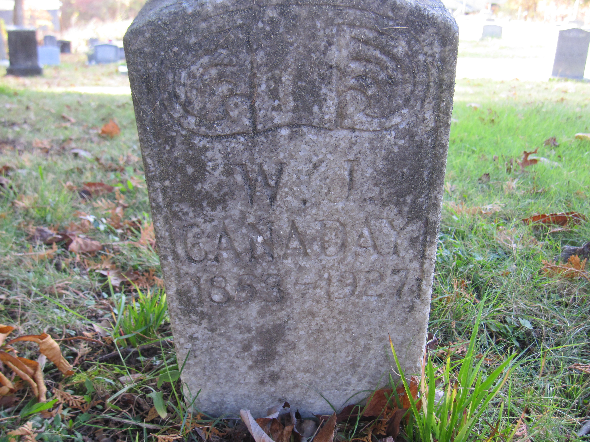

William Jacob Canaday
1852 – 21 January 1927
Canaday line · Virginia → Raleigh County, West Virginia
Profile status: SUPPORTED
Quick Facts
Born
1852, Virginia SUPPORTED (census and compiled sources; his marker reads 1853; Find a Grave and Tricia's Ancestry tree give 15 August 1852, FamilySearch gives 14 August 1852 — the day is not settled)
Died
21 January 1927, Beckley, Raleigh County, West Virginia DOCUMENTED (his West Virginia death record; his obituary in the Beckley Post-Herald, 22 January 1927, says he was struck by the 11 o'clock passenger train near Beckley Junction the day before and died in a Beckley hospital)
Buried
Canaday Cemetery, Glen White, Raleigh County, West Virginia SUPPORTED (Find a Grave memorial 137048821; his marker reads 1853–1927; his funeral was believed to be held at Glen White, per his obituary)
Married
Marinda Celia Lilly — 2 September 1878, Raleigh County, West Virginia
SUPPORTED (a compiled account and WikiTree agree; the register has not been read — Tricia's Ancestry tree cites the West Virginia Marriage Records index giving 28 July 1878, flagged below)
Occupation
The book calls him a blacksmith and carpenter; no record found yet carries his occupation FAMILY ACCOUNT (compiled book only; not entered on the tree sites)
Religion
Primitive Baptist SUPPORTED (his obituary: a member of the Primitive Baptist church)
Military
No military service
Immediate Family
Parents
Jacob Burl Cannaday DOCUMENTEDEllender “Eleanor” Canaday SUPPORTEDWilliam’s father is documented two ways: William’s own 1927 death record names his father “Burl Canady,” and the 1870 census (Trap Hill Township, read from the image) shows “Wm,” 18, in Jacob B. and Elenor Canaday’s household. His mother rests on her presence as Jacob’s wife in the 1850 and 1870 households. The mother field on William’s death certificate image has not yet been read.
Spouse
Marinda Celia Lilly (7 July 1853–26 June 1923), married 2 September 1878
SUPPORTEDNo other marriage for either spouse. FamilySearch and Tricia’s Ancestry tree carry a Souder spouse for Marinda (married about 1875, Mercer County) — nothing in the research supports it; a Souder married Marinda’s sister Nancy Elizabeth, and it reads as a conflation.
Children
Roberta Lora Harper (Canaday) (1879–1935, married a Harper)
SUPPORTEDJames M. Canaday (1881–1899)
SUPPORTEDOverton Delaware Canaday (1883–1900)
SUPPORTEDGenettie Ellen Canaday (6 February 1885–23 January 1970) — the direct line
SUPPORTEDLonda Everet Canaday (1887–1941)
SUPPORTEDCompiled dates. James and Overton died as teenagers, a year apart at the turn of the century. Londa is called “Lundy,” a son, in his father’s obituary; Geni spells him “Lundie.” Genettie’s birth record reads 6 February 1885; Geni gives 5 February and spells her “Genetta Ella.”
On Family Tree Sites
Life Timeline
1852
Born, Virginia SUPPORTED (census and compiled sources; his marker reads 1853)
1870 · age 18
In Jacob B. and Elenor Canaday’s household, Trap Hill Township, Raleigh County DOCUMENTED (1870 census, read from the image)
2 September 1878 · age 26
Married Marinda Celia Lilly, Raleigh County SUPPORTED (compiled account; the register has not been read)
1879–1887
Five children born: Roberta Lora, James M., Overton Delaware, Genettie Ellen — the direct line — and Londa Everet SUPPORTED (compiled dates)
About 1907
Moved to Beckley; previously lived in Crab Orchard SUPPORTED (his obituary: a Beckley resident about twenty years)
21 January 1927 · age 74
Struck by the 11 o’clock passenger train near Beckley Junction; died that morning in a Beckley hospital DOCUMENTED (death record; obituary, Beckley Post-Herald, 22 January 1927)
1927
Buried, Canaday Cemetery, Glen White SUPPORTED (Find a Grave memorial 137048821; his funeral was believed to be held at Glen White, per his obituary)
Life Story
William Jacob Canaday was born in 1852 in Virginia, the son of Jacob Burl Cannaday and Ellender Canaday. His father is documented two ways: William’s own 1927 death record names his father “Burl Canady,” and the 1870 census, read from the image, shows “Wm,” 18, in Jacob B. and Elenor Canaday’s household in Trap Hill Township, Raleigh County. The book calls him a blacksmith and carpenter, but no record found yet carries his occupation, so none is entered on the tree sites.
On 2 September 1878 in Raleigh County he married Marinda Celia Lilly, daughter of Andrew H. “Sockhead” Lilly and Marinda Walker. They had five children: Roberta Lora, James M., Overton Delaware, Genettie Ellen — the direct line — and Londa Everet. James and Overton died as teenagers, a year apart at the turn of the century. The family settled around Glen White and Pemberton; Genettie’s 1900 marriage took place at her father’s home. William lived in Beckley for about twenty years, having lived before that in Crab Orchard, and was a member of the Primitive Baptist church.
On the morning of 21 January 1927, walking toward the Beckley depot along the side of the track, William was sideswiped by the 11 o’clock passenger train near Beckley Junction. The engineer tried to stop and could not halt the train in time. William never recovered consciousness and died that morning in a Beckley hospital, aged 74; no injuries were found on his body, and his age and the shock were probably factors in his death. His wife had died in June 1923. He was survived by a son, Lundy, and two daughters, and was buried in Canaday Cemetery, Glen White, his marker reading 1853–1927.
Sources and Evidence
- West Virginia death record, William Jacob Canaday (died 21 January 1927, Beckley): names his father “Burl Canady” and his wife “Marinda C. Lilly” DOCUMENTED
- 1870 United States census, Trap Hill Township, Raleigh County, West Virginia (read from the image): “Wm,” 18, in Jacob B. and Elenor Canaday’s household DOCUMENTED
- Obituary, Beckley Post-Herald, Saturday 22 January 1927, page 1 (photograph filed in the couple folder, read with my own eyes): struck by the 11 o’clock passenger train near Beckley Junction; died in a Beckley hospital; Beckley resident about twenty years, previously Crab Orchard; “His wife died in June, 1923”; survived by a son, Lundy, and two daughters; funeral believed at Glen White, Sunday morning; member of the Primitive Baptist church SUPPORTED
- Find a Grave memorial 137048821, William J Canaday: born 15 August 1852, died 21 January 1927, Beckley; buried Canaday Cemetery, Glen White; marker photographs (2014 and 2017, read with my own eyes) both show the marker reading 1853–1927 SUPPORTED
- Marriage: compiled account and WikiTree agree on 2 September 1878, Raleigh County; the register has not been read SUPPORTED
- Geni profiles, click-verified 4 November 2026: William Jacob Canaday, born 15 August 1852, died 21 January 1927, Beckley; son of Jacob Burl Cannaday and Ellender “Eleanor” Canaday; husband of Marinda Celia Canaday; father of Roberta Lora Harper, James M., Overton Delaware, Genetta Ella McKinney, and Lundie Everet Canaday SUPPORTED
- Miller’s 1908 History of Summers County (in the couple folder’s Books): Lilly family context — the couple themselves are not named in it SUPPORTED
Research Notes and Open Questions
- Grades on this page: DOCUMENTED means an original record was read (his death record, the 1870 census image); SUPPORTED means a claim attested by filed research — the compiled account, the obituary, Geni checks — but not by a register read here; FAMILY ACCOUNT means the compiled book’s word.
- Birth year: the page carries 1852, from the census and the compiled sources. His marker reads 1853. Find a Grave and Tricia’s Ancestry tree give 15 August 1852; FamilySearch gives 14 August 1852. The day is not settled, and the page does not adopt one.
- Marriage day: the compiled account and WikiTree give 2 September 1878. Tricia’s Ancestry tree cites the West Virginia Marriage Records index giving 28 July 1878. The register itself has not been read — Raleigh County marriages for 1855–1889 sit outside the state’s online collection, and the register survives on microfilm at the West Virginia State Archives. The register read settles the day.
- Tricia’s Ancestry tree: the tree couple is NOT this couple. Its William has a different mother (Mary Canaday, not Ellender), its Marinda is a different woman (born 27 April 1854, daughter of John Lewis Lilly and Martha Ann Stump, not Sockhead’s daughter), and its seven children (born 1892–1905) do not overlap this couple’s five at all. Nothing from the tree was adopted; the full comparison is filed in the couple folder.
- WikiTree: William’s parents are misplaced there — the profiles for Jacob Burwell Canaday (Canaday-169) and Ellender (Canaday-171) exist but sit as his half-brother and sister-in-law, while his structured father is his grandfather’s profile. Reparenting another manager’s profiles is beyond this pass.
- FamilySearch: carries William born 14 August 1852 and Marinda born 6 July 1854 in Wyoming County, both with contributor sources attached, against the carried 1852 and 7 July 1853. Neither date was adopted.
- Open items: (1) Marinda’s 1923 death certificate (West Virginia State Archives microfilm, Raleigh County Deaths 1853–1969) — names her parents and settles the Geni dispute over her death. (2) The 1878 marriage register entry (same archives, Index to Marriages 1850–1895). (3) The mother field on William’s 1927 death certificate image — the one field of that record not yet read; it would raise Ellender from supported to documented. (4) William’s occupation — the couple’s 1880–1920 censuses have not been extracted.
- Father’s line: his father’s line runs to William Patrick Canaday × Martha Wright and behind them to James Cannaday of the 1817 Franklin County will × Elizabeth Raikes — strongly supported, one document (the will’s full text) short of documented; that work belongs to the generations above.
- Genes Reunited is not carried for now — it is deferred to a later pass. No MyHeritage profile is listed in the research folder, so no MyHeritage tile is shown here.
- Photographs: no portrait of William has been found. His marker photograph is the only picture of him, so it stands as his profile picture. A second marker photograph (2017) and his obituary photograph are filed in the couple folder; the obituary is cited above, not shown as a picture. The three place photographs in the folder (Pemberton, Glen White, and the Patrick County courthouse at Stuart, Virginia) are contextual views, not family photographs, so none is shown here.